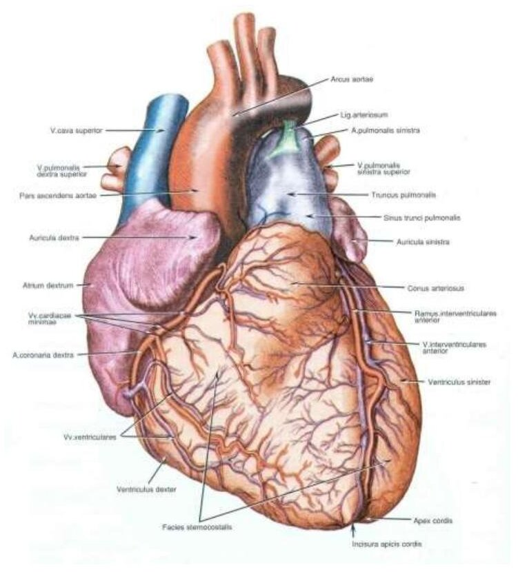
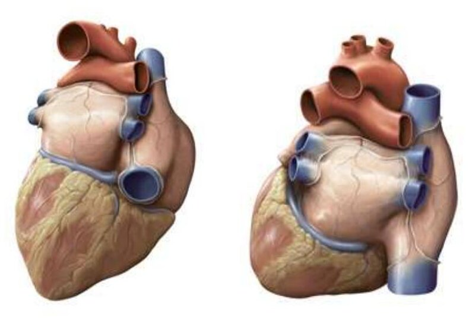
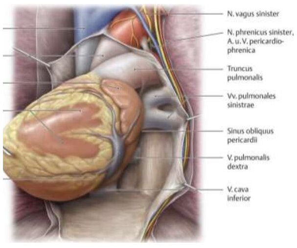
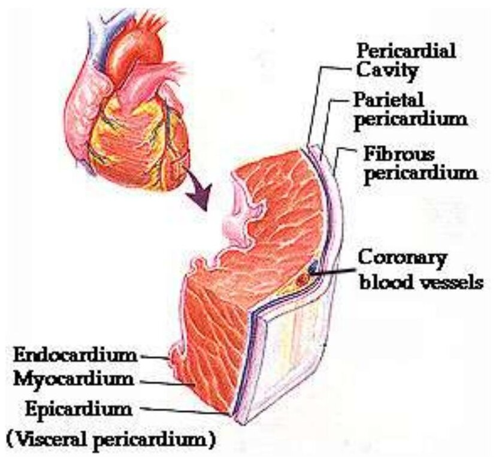
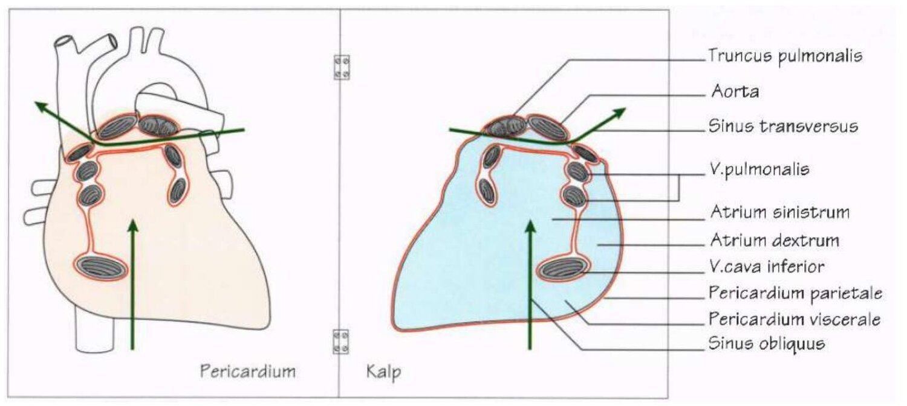
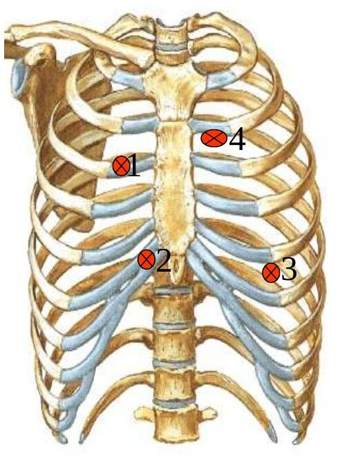
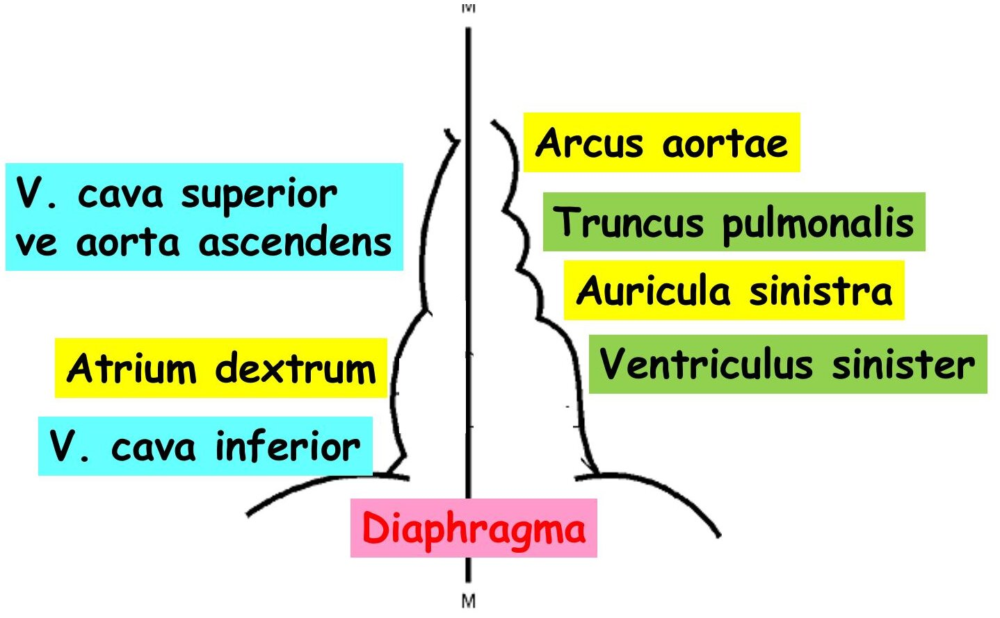

Bölüm 2 · Situs et forma cordis
Kalp göğsün ortasında, iki akciğerin arasındaki dar bölmede, kendi kesesinin içinde durur. Bu bölüm kalbin nerede olduğunu, komşularını, dışarıdan bakınca görülen yüzlerini, kenarlarını ve oluklarını, onu saran perikardı ve göğüs duvarına düşen izdüşümünü anlatır. Bunlar hem muayenenin (kalbin nerede dinleneceği, nerede perküte edileceği) hem de göğüs grafisini okumanın temelidir.
Göğüs boşluğunun iki yanını akciğerler ve plevra kaplar. Ortada, sternumdan omurgaya ve üst açıklıktan diyaframa uzanan bölmeye mediastinum denir. Angulus sterni'den T4-T5 diskine çizilen yatay düzlem mediastinumu üst ve alt bölümlere ayırır. Alt bölüm perikarda göre üçe bölünür: perikardın önü mediastinum anterius, perikard ve içindekiler mediastinum medium, perikardın arkası mediastinum posterius'tur. Kalp, perikard kesesiyle birlikte mediastinum medium'da, diyaframın üzerinde ve iki akciğerin ön-alt kısımlarının arasında yer alır.
Sınavlar mediastinum bölmelerinin içeriğini her yıl soruyor. Hangi yapının nerede olduğunu bilmenin kısa yolu, yapının düzlemin üstünde mi altında mı, perikardın önünde mi içinde mi arkasında mı kaldığını düşünmektir:
| Bölme | Başlıca içerik |
|---|---|
| M. superius (üst açıklık ile T4-T5 düzlemi arası) | Timus (çocukta), vv. brachiocephalicae ve VCS'nin üst yarısı, arcus aortae ve üç dalı, trakea (bifurkasyonun üstü), özofagus, ductus thoracicus, nn. vagi, nn. phrenici, n. laryngeus recurrens sinister, sempatik gövdeler |
| M. anterius (sternum ile perikard arası) | Timus artığı, lenf düğümleri, gevşek bağ dokusu ve ligg. sternopericardiaca |
| M. medium (perikard ve içi) | Kalp ve perikard, aorta ascendens, truncus pulmonalis ve aa. pulmonales, VCS'nin alt yarısı, v. azygos'un son kısmı, bifurcatio tracheae ve iki bronchus principalis, vv. pulmonales, nn. phrenici ve aa./vv. pericardiacophrenicae |
| M. posterius (perikard ile T5-T12 arası) | Aorta thoracica (pars descendens), özofagus ve nn. vagi, ductus thoracicus, v. azygos ve v. hemiazygos, sempatik gövdeler ve nn. splanchnici, lenf düğümleri |
Bu tablo üç sınav sorusunun cevabını verir. Bronchus principalis düzlemin altında, karinadan çıkar ve mediastinum medium'dadır, bu yüzden mediastinum superius'ta bulunmaz (2023-2024 S24). Truncus pulmonalis perikardın içindedir, mediastinum posterius'ta bulunmaz (2024-2025). Bifurcatio aortae ise göğüste bile değildir: aorta L4 düzeyinde, karın boşluğunda ikiye ayrılır (Derleme S55). Aynı sorularda çeldirici olarak verilen n. vagus, özofagus ve ductus thoracicus hem üst hem arka mediastinumda bulunur, çünkü bu yapılar mediastinumun bütün boyunca yukarıdan aşağı uzanır.
Kalbin konumu ve ekseni. Kalbin yaklaşık üçte biri orta hattın sağında, üçte ikisi solundadır. Uzun ekseni tabandan tepeye doğru sağ omuzdan sol hipokondriyuma uzanır, yani kalp göğüs içinde öne, aşağı ve sola eğik durur. Bu eğiklik nedeniyle "ön yüz" dediğimiz yüzü büyük ölçüde sağ ventrikül, "arka yüz" dediğimiz tabanı ise sol atriyum oluşturur. Sağ ve sol kavramı kalpte bu yüzden yanıltıcıdır: sağ boşluklar aynı zamanda öndeki, sol boşluklar arkadaki boşluklardır.
Komşuluklar. Sağda ve solda akciğerlerin mediastinal yüzleri (aradaki plevra ve perikardla), altta diyafram, önde sternum, kaburga kıkırdakları, timus artıkları ve kısmen akciğerlerin ön kenarları, arkada ise özofagus ve aorta descendens bulunur. Arkadaki komşuluğun klinik bir sonucu vardır: sol atriyum özofagusun hemen önündedir. Bu yüzden sol atriyum büyüdüğünde (örneğin mitral darlıkta) özofagusa bası yaparak yutma güçlüğü yapabilir. Aynı yakınlık, özofagusa ilerletilen bir ultrason probuyla kalbin arkadan, çok net görüntülenmesini (transözofageal ekokardiyografi) mümkün kılar.
Erişkin kalbi kişinin kapalı yumruğu büyüklüğündedir. Ağırlığı erkekte 280-340 g, kadında 230-280 g'dır. Boyu (tabandan tepeye) yaklaşık 12 cm, genişliği 8-9 cm, ön-arka çapı 6 cm'dir. Hacmi 250-350 cm³ kadardır: atriyumların hacmi 100-150 cm³, ventriküllerinki 150-200 cm³. Kalp dakikada ortalama 70 kez atar. Bu günde yaklaşık 100.000 atıma karşılık gelir. Her atımda yaklaşık 70 mL kan atıldığı için kalp dinlenmede dakikada 5 L, günde 7.000 litreyi aşkın kan pompalar. (Sunumda günlük hacim 3.784 litre olarak verilmiştir. Bu değer dinlenmedeki kalp debisiyle yapılan hesabın yaklaşık yarısıdır. Sınavda sunumdaki değer sorulabilir, ama mekanizmayı anlamak için hesabın kendisini bilmek yeterlidir.)
Vücut tipi. Kalbin konumu göğüs kafesinin biçimine uyar. Uzun ve dar göğüslü (astenik) kişilerde diyafram aşağıdadır ve kalp dikleşerek aşağı sarkar. Grafide ince, uzun bir kalp görülür, buna damla kalp denir. Geniş göğüslü (piknik) kişilerde diyafram yüksektir ve kalp onun üzerinde yatık durur. Arada kalan ve en sık görülen tip oblik kalptir. Aynı nedenle kalp derin inspirasyonda (diyafram iner) daha uzun ve dar, ekspirasyonda daha yatık ve geniş görünür. Fibröz perikard diyaframa sıkıca yapıştığı için kalp diyaframın hareketini izler.
Vertebra düzeyleri. Kalp ayakta duran bir kişide T6-T9, yatan bir kişide T5-T8 vertebralarının önündedir. Ayakta organlar yerçekimiyle biraz aşağı iner. Kalp ile sternum arasındaki bölgeye regio retrosternalis, kalp ile omurga arasındaki bölgeye regio retrocardiaca denir. Yan göğüs grafisinde bu iki alan normalde havayla dolu, siyah alanlar olarak görülür. Sağ ventrikül büyürse retrosternal alan, sol atriyum büyürse retrokardiyak alan daralır.
Kalp, atriyum ve ventrikül adı verilen boşluklardan oluşmuş kaslı bir kesedir. Dış yüzünde atriyumları ventriküllerden halka biçiminde bir oluk ayırır: sulcus coronarius (sulcus atrioventricularis). Bu olukta koroner arterlerin ana gövdeleri ve sinus coronarius bulunur (Bölüm 4). İki ventrikül arasındaki sınırı önde sulcus interventricularis anterior, arkada sulcus interventricularis posterior çizer. Bu oluklarda da sırasıyla LAD ile v. cordis magna ve PDA ile v. cordis media seyreder. İki interventriküler oluk tepenin biraz sağında, incisura apicis cordis'te birleşir. Yani interventriküler septum apeksin tam ortasına değil sağına ulaşır ve apeksi tümüyle sol ventrikül oluşturur.
Basis cordis (taban). Kalbin koni biçimli taban kısmıdır ve arkaya bakar. Çevresini sulcus coronarius'un belirlediği, atriyumlar ile ventriküller arasından geçen düzlem tabanı oluşturur. Tabanın büyük kısmını sol atriyum (tamamı), küçük bir kısmını sağ atriyum yapar. Dört v. pulmonalis ve iki vena cava tabandan kalbe girer. Kalbe giren ve çıkan oluşumlar tabanda olduğu için kalp burada büyük damarlarla asılı gibidir. Taban yatan insanda T5-T8, ayaktaki insanda T6-T9 önündedir. Omurga ile taban arasında perikard, v. pulmonalis dextra, özofagus ve aorta thoracica bulunur.
Apex cordis (tepe). Aşağı, öne ve sola bakar ve tümüyle sol ventrikül tarafından oluşturulur. Sol 5. interkostal aralıkta, orta hattan 8-10 cm uzaklıktadır. Ventrikül her sistolde öne doğru dönerken apeks göğüs duvarına çarpar. Bu vuruş sol 5. İKA'da, orta klavikula çizgisinin hemen içinde ele gelir ve görülür (ictus cordis, apeks vuruşu). Sol ventrikül genişlediğinde apeks vuruşu aşağı ve dışa kayar.


Kalbin dört yüzü vardır:
Kalbin dört kenarı vardır:
Kenar adlarındaki "akut" ve "obtus" koroner dalların adlarına da geçmiştir. Keskin alt kenar boyunca inen dal r. marginalis dexter (akut marjinal, RCA'nın dalı), yuvarlak sol kenar boyunca inen dal r. marginalis sinister (obtus marjinal, LCx'in dalı) adını alır (Bölüm 4.2). Ön yüzü en çok sağ ventrikül, diyafragmatik yüzü en çok sol ventrikül, tabanı en çok sol atriyum, apeksi tümüyle sol ventrikül, sağ kenarı tümüyle sağ atriyum oluşturur.

Pericardium, kalbi ve büyük damarların kök kısımlarını saran, koni biçimli, iki katmanlı bir torbadır. İki katman yapı ve işlev bakımından tamamen farklıdır (Şekil 2.3):

İki seröz yaprak arasındaki ince aralığa cavitas pericardialis denir. İçinde 20-30 cm³ kadar seröz sıvı (liquor pericardii) bulunur. Bu sıvı, kalp her atımda biçim değiştirirken iki yaprağın birbirinin üzerinde sürtünmesiz kaymasını sağlar.
Perikard sinüsleri. Seröz perikardın büyük damarlar çevresindeki katlanma çizgileri iki çıkmaz oluşturur. Bu çizgilerin düzeni gelişimden gelir. Embriyoda kalp düz bir tüptür: bir ucunda arterler çıkar, diğer ucunda venler girer. Tüp perikard boşluğunda kıvrılınca arteriyel uç (aorta ve truncus pulmonalis) ile venöz uç (vena cava'lar ve vv. pulmonales) yan yana gelir, ama her ucun çevresindeki perikard kılıfı ayrı kalır. Böylece seröz perikard iki ayrı kılıf yapar: biri iki büyük arteri, diğeri bütün venleri birlikte sarar (Şekil 2.4).

Damar ve sinirler. Perikardın ana arterleri a. thoracica interna'nın dalları olan a. pericardiacophrenica ve a. musculophrenica'dır, aorta thoracica'dan da küçük dallar gelir. Venleri v. azygos'a açılır, ayrıca v. pericardiacophrenica v. thoracica interna'ya dökülür. Sinirleri n. phrenicus, n. vagus ve sempatik gövdeden gelir. Duyuyu fibröz perikard ile parietal yaprağın n. phrenicus (C3-C5) yoluyla taşıdığını bilmek önemlidir. Visseral yaprak (epikard) ise ağrıya duyarsızdır. Perikard ağrısı sunumda belirtildiği gibi sternumun arkasında hissedilir. N. phrenicus'un segmentleri omuz derisini de innerve ettiği için perikardit ağrısı omuz başına ve boyuna da yansıyabilir.
Klinik. Perikardın iltihabına perikardit denir. Pürüzlenen seröz yapraklar her atımda birbirine sürtünür ve steteskopla "teneke gıcırtısı" gibi bir sürtünme sesi duyulur. Perikard boşluğunda sıvı, kan ya da iltihap birikirse (perikard efüzyonu) fibröz kese esnemediği için içerideki basınç hızla yükselir. Sıvı 250-500 cm³'e ulaştığında kalp, özellikle ince duvarlı sağ boşluklar, diyastolde genişleyemez ve dolamaz. Dolamayan kalp yeterli kan atamaz, kan basıncı düşer, venöz kan geri birikir ve boyun venleri şişer. Bu tabloya kalp tamponadı denir ve acildir. Grafide kalp gölgesi büyümüş, "sürahi" biçimini almıştır. Tedavi sıvının boşaltılmasıdır: perikardiyosentez. Sunumda tarif edilen yolda kalın bir iğne sternumun sol yanından 5. ya da 6. interkostal aralıktan sokulur. Burada sol akciğerin ön kenarındaki çentik (incisura cardiaca) nedeniyle perikard göğüs duvarına plevrasız temas eder, iğne plevrayı ve akciğeri delmeden perikarda ulaşır. Günümüzde en sık kullanılan yol ise processus xiphoideus'un altından yukarı ve sola doğru girilen subksifoid yoldur.
Kalp kenarlarının göğüs ön duvarındaki izdüşümü vücut yapısına göre biraz değişir, ama klinikte iki alan tanımlanır. Rölatif (izafi) matite alanı kalbin gerçek büyüklüğünü ve biçimini gösterir. Perküsyonda göğüs duvarına vurulduğunda bu alanın kenarlarında ses, akciğerin hava dolu tınlamasından kalbin donuk (mat) sesine geçer. Alan dört noktanın birleştirilmesiyle çizilir (Şekil 2.5):


Mutlak (absolut) matite alanı kalbin ön yüzünün araya akciğer girmeden doğrudan göğüs duvarıyla temas ettiği daha küçük alandır. Bu alan, sol akciğerin ön kenarındaki incisura cardiaca'nın açıkta bıraktığı bölgedir. Mutlak matite alanının değişmesi mekanizmasıyla anlaşılır. Perikard efüzyonunda, kalbin ileri derecede büyümesinde ve akciğerin sönmesinde (kollaps) akciğer kalbin önünden çekilir, alan büyür. Amfizemde ise şişkin akciğer kalbin önünü örter ve mutlak matite küçülür, hatta kaybolur.
Göğüs grafisinde kalp gölgesi. Arka-ön göğüs grafisinde kalp ve büyük damarlar, iki yanda hava dolu akciğerlerin arasında beyaz bir gölge oluşturur. Gölgenin sağ kenarını yukarıda VCS (ve arkasındaki aorta ascendens), aşağıda sağ atriyum oluşturur. Sol kenarda yukarıdan aşağı dört kabarıntı görülür: arcus aortae (aort topuzu), truncus pulmonalis, auricula sinistra ve sol ventrikül (Şekil 2.5). Kalp gölgesinin en geniş çapının göğüs kafesinin en geniş iç çapına oranına kardiyotorasik oran denir ve erişkinde normalde 0,5'ten küçüktür. Sağ ventrikül ön yüzde olduğu için PA grafide hiçbir kenarı oluşturmaz.
Doğru: D. Trakea T4-T5 düzleminde, yani mediastinum superius'un alt sınırında ikiye ayrılır. Ana bronşlar bu düzlemin altında başlar ve akciğer köklerine kadar mediastinum medium'da seyreder.
A yanlış: n. vagus boyundan gelir, mediastinum superius'tan geçerek özofagusla birlikte mediastinum posterius'a iner. B yanlış: arcus aortae angulus sterni düzleminde başlar ve biter, tümüyle mediastinum superius'tadır. C ve E yanlış: özofagus ve ductus thoracicus mediastinumun bütün boyunca uzanır, hem üst hem arka bölmede bulunur.
Doğru: C. Aorta hiatus aorticus'tan (T12) karın boşluğuna girer ve L4 vertebranın alt kenarı düzeyinde aa. iliacae communes'e ayrılır. Bifurcatio aortae karındadır, göğüs boşluğunda değildir.
A, B, D ve E yanlış: mediastinum posterius'un içeriği aorta thoracica, özofagus ve onunla birlikte inen iki n. vagus, ductus thoracicus, azygos sistemi ve sempatik gövdelerdir. Dördü de bu bölmenin tipik yapılarıdır.
Doğru: D. Truncus pulmonalis sağ ventrikülün conus arteriosus'undan çıkar ve ikiye ayrılana kadar perikardın içinde, mediastinum medium'da kalır. Aorta ascendens ile birlikte sinus transversus'un ön duvarını yapar.
A, B, C ve E yanlış: dördü de perikardın arkasında, mediastinum posterius'ta yukarıdan aşağı uzanır. V. azygos ancak son kısmında, akciğer kökünün üzerinden kavis yaparak VCS'ye açılırken öne geçer.
Doğru: B. Kalbin sağ kenarı VCS ile VCİ arasında uzanır ve tümüyle sağ atriyum tarafından oluşturulur. PA grafide kalp gölgesinin sağ alt kenarı da bu yüzden sağ atriyumdur.
A yanlış: taban arkaya bakar ve büyük kısmını sol atriyum yapar. C yanlış: diyafragmatik yüzün büyük kısmı sol ventrikül, kalanı sağ ventriküldür. Atriyumlar bu yüze katılmaz. D yanlış: interventriküler oluklar apeksin sağında birleşir, apeksi tümüyle sol ventrikül oluşturur. E yanlış: yuvarlak sol kenar (margo obtusus) sol ventrikül ve auricula sinistra'dır. Keskin kenar (margo acutus) alt kenardır ve büyük kısmı sağ ventriküldür.
Doğru: E. Seröz perikard büyük arterleri ve büyük venleri iki ayrı kılıfla sarar. Sinus transversus bu iki kılıfın arasındaki geçittir: önünde aorta ve truncus pulmonalis, arkasında VCS ve atriyumlar bulunur.
A yanlış: sinus obliquus venöz kılıfın arkasındaki kör çıkmazdır, sol atriyumun arkasındadır. İçinden parmak geçirilemez, ancak parmak kalbin altından sokulup çıkmaza girer. B yanlış: sinus coronarius perikardın bir girintisi değil, sulcus coronarius'ta yer alan bir vendir (Bölüm 4.5). C yanlış: recessus costodiaphragmaticus plevra boşluğunun bir girintisidir. D yanlış: incisura cardiaca sol akciğerin ön kenarındaki çentiktir.